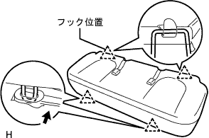

パーキングブレーキ ケーブルASSY NO.3 取り外し |
| 1. バッテリマイナスターミナル切り離し |
| 2. リヤシートバックASSY取りはずし（リヤシート一体可倒式） |
リヤシートバツクを前倒位置にする。
 |
ボルト2本取り付け部のクリップをはずす。
 |
リヤシートバツクカバーをめくりボルト2本をはずし、リヤシートバツクASSYを取りはずす。
| 3. リヤシートクッションASSY取りはずし（リヤシート一体可倒式） |
前部のロックのレバーを図の矢印の方向に押してかん合をはずす。
リヤシートベルトを、リヤシートクッションカバー & パッド後部のゴムバンドに通す。
|  |
リヤシートクッションASSY後部のフックのかん合をはずし、リヤシートクッションASSYを取りはずす。
| 4. リヤシートバック ヒンジSUB-ASSY RH取りはずし（リヤシート一体可倒式） |
 |
ボルトをはずし、リヤシート バツク ヒンジ RHを取りはずす。
| 5. リヤシートバック ヒンジSUB-ASSY LH取りはずし（リヤシート一体可倒式） |
ボルトをはずし、リヤシート バツク ヒンジ LHを取りはずす。
| 6. リヤシートバックASSY RH取りはずし（リヤシート分割可倒式） |
| 7. リヤシートバックASSY LH取りはずし（リヤシート分割可倒式） |
リヤシートバツクを前倒位置にする。
 |
ボルト2本取り付け部のクリップをはずす。
|
リヤシートバツクカバー下部をめくりボルト2本をはずし、リヤシートバツクを取りはずす。
| 8. リヤシートクッションASSY取りはずし（リヤシート分割可倒式） |
リヤシートクッションASSY前側をリヤシート クッション ロック ストライカにロックさせる。
 |
リヤシートバックヒンジRHよりスナップリングを取りはずす。
リヤシートクッションASSY右側ブラケットの、リヤシートヒンジRHを引き抜いて取りはずす。
 |
ボルトをはずし、リヤシ－トヒンジLHを取りはずす。
リヤシートクッションASSYのリヤシート フックASSY RHを引き、リヤシートクッションASSY前部のかん合をはずす。
リヤシートベルトを、リヤシートクッションカバー & パッド後部のゴムバンドに通す。
リヤシートクッションASSYを取りはずす。
| 9. フロントシートASSY RH取りはずし |
シートトラックアジャステイングハンドルを操作して、フロントシートASSYをリヤモーストにする。
 |
フロントシートレッグカバーのツメのかん合をはずし、フロント側のボルト2本を取りはずす。
シートトラックアジャステイングハンドルを操作して、フロントシートASSYをフロントモーストにする。
フロントシートレッグカバーのツメのかん合をはずし、リヤ側のボルト2本を取りはずす。
ワイヤハーネスをはずしコネクタを切り離す。
フロントシートASSY RHを車両より取りはずす。
| 10. フロントドアスカッフ プレート RH取りはずし |
 |
手で上方に引いてツメのかん合をはずし、フロントドアスカツフプレートＲＨを取りはずす。
| 11. フロントドア オープニングトリム ウェザストリップ RH取りはずし |
| 12. リヤシート 3ポイントタイプ ベルトASSY OUT RH取りはずし（フロアアンカ部） |
ボルトをはずし、リヤシート 3ポイントタイプ ベルトASSY OUT RH（フロアアンカ部）を取りはずす。
| 13. ラップベルト アウタアンカ カバー取りはずし |
 |
ツメのかん合をはずし、ラップベルト アウタアンカ カバーを取りはずす。
| 14. フロントシート アウタベルトASSY RH取りはずし（フロアアンカ部） |
ボルトをはずし、フロントシート アウタベルトASSY RH（フロアアンカ部）を取りはずす。
| 15. サイドNO.1 トリムASSY RH取りはずし |
 |
手で車両内側方向に引いて、クリップおよびツメのかん合をはずし、サイドN o.1トリムASSY RHを取りはずす。
| 16. フロントフロア カーペットASSY FR取りはずし |
フロントフロア サイレンサパッド RHからフロント フロア サイレンサパッド リヤ RHにかけてフロントフロア カーペットASSY FRをめくる。
| 17. フロア ボード NO.1取りはずし |
クリップ2個のかん合をはずし、フロアボードNo.1を取りはずす。
| 18. フロントフロアサイレンサ パッドSUB-ASSY RR RH取りはずし |
| 19. ワイヤアジャスティング ナット NO.1緩め |
 |
パーキングブレーキインタミデイエイトレバー部のロックナットおよび、パーキングブレーキワイヤアジヤステイングナツト No.1を緩める。
| 20. パーキングブレーキ ケーブルASSY NO.3切り離し |
パーキングブレーキケーブル No.3をパーキングブレーキケーブルイコライザから切り離す。
| 21. リヤタイヤ取りはずし |
| 22. リヤブレーキ ドラム取りはずし |
 |
パーキングブレーキを解除し、リヤブレーキドラムを取りはずす。
| 23. ブレーキシュー(フロント)取りはずし |
 |
SSTを使用して、テンションスプリングをブレーキシューASSYから切り離し、パーキングブレーキシューストラットセットLHを取りはずす。
 |
SSTを使用して、リヤブレーキシューホールドダウンスプリングカップ、リヤブレーキシューホールドダウンスプリングおよびリヤブレーキシューホールドダウンスプリングピンを取りはずす。
リヤブレーキシューリターンスプリングを切り離し、ブレーキシュー(フロント)を取りはずす。
| 24. リヤブレーキオートマチックアジャスト レバー LH取りはずし |
 |
リヤブレーキオートマチックアジャストレバートーションスプリングをはずし、リヤブレーキオートマチックアジャストレバーLHを取りはずす。
| 25. ブレーキシュー(リヤ)取りはずし |
リヤブレーキシューリターンスプリングをブレーキシュー(リヤ)から取りはずす。
 |
SSTを使用して、リヤブレーキシューホールドダウンスプリングカップ、リヤブレーキシューホールドダウンスプリングおよびリヤブレーキシューホールドダウンスプリングピンを取りはずす。
ニードルノーズプライヤを使用して、パーキングブレーキケーブルNo.3を切り離し、ブレーキシュー(リヤ)を取りはずす。
| 26. パーキングブレーキ ケーブルASSY NO.3取りはずし |
ボルト6本およびナット1個をはずし、パーキングブレーキケーブル No.3の各ケーブルブラケットをボデーから取りはずす。

 |
ボルトをはずし、パーキングブレーキケーブル Ｎｏ．３をバッキングプレートから取りはずす。